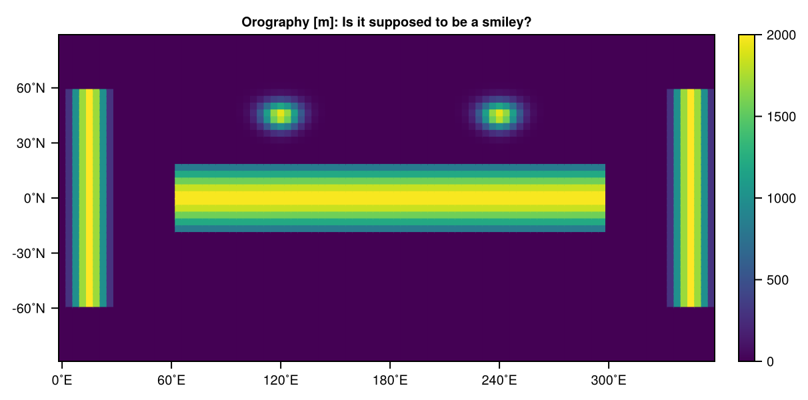
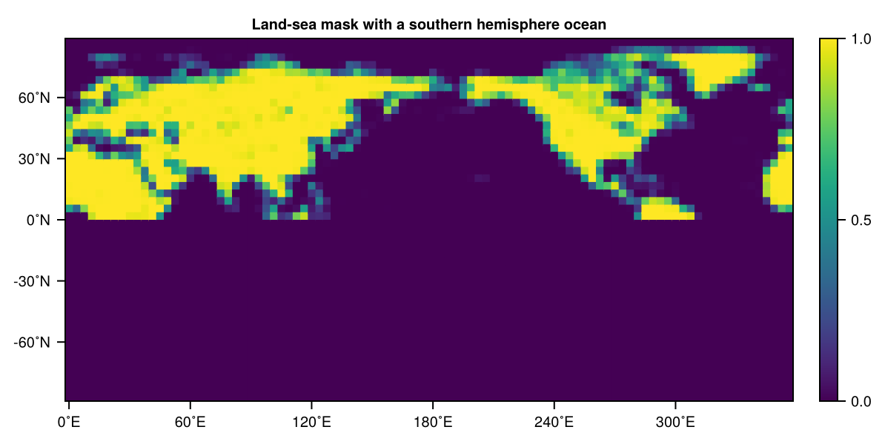
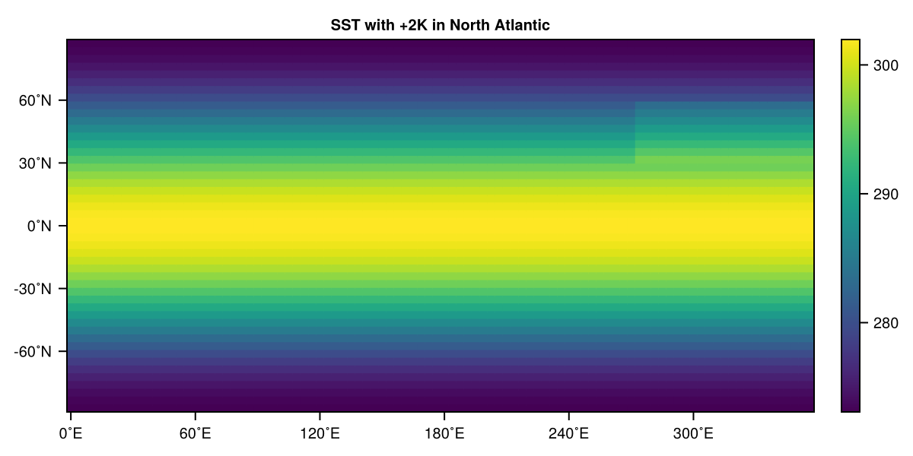

RainMaker instructions
While the List of submissions gives you some idea of what you can do make it rain more or less in a SpeedyWeather simulation, the following provides more instructions and serves as an introduction to atmospheric modelling with SpeedyWeather.
You can analyse precipitation as a time series (Visualising RainGauge measurements) or as a global map accumulated during the simulation (Visualising accumulated rainfall globally).
General workflow to run SpeedyWeather
There's more information in the SpeedyWeather documentation but in short there are 4 steps
using SpeedyWeather
# 1. define the resolution
spectral_grid = SpectralGrid(trunc=31, nlayers=8)
# 2. create a model
model = PrimitiveWetModel(spectral_grid)
# 3. initialize the model
simulation = initialize!(model)
# 4. run the model
run!(simulation, period=Day(10))You can add a RainGauge to measure precipitation, but the following will focus on ways you can change the model, impacting what's been simulated. They may or may not have a large impact on the simulated precipitation but that is up to you to figure out.
Change the resolution
SpeedyWeather is a spectral model. That means it internally represents its variables as coefficients of horizontal waves on the sphere (the spherical harmonics) up to a certain maximum wavenumber that is usually referred to as truncation. So for a truncation of 31, SpeedyWeather would resolve wavenumbers 0 to 31, but not 32 and larger. The higher the truncation the higher the resolution and automatically chosen higher resolution of the grid. You control the resolution through the keyword argument trunc of the SpectralGrid object that defines the resolution of a simulation
using SpeedyWeather
spectral_grid = SpectralGrid(trunc=42)SpectralGrid:
├ Spectral: T42 LowerTriangularMatrix{Complex{Float32}}, radius = 6.371e6 m
├ Grid: 64-ring OctahedralGaussianGrid{Float32}, 5248 grid points
├ Resolution: 312km (average)
├ Vertical: 8-layer SigmaCoordinates
└ Device: CPU using ArrayNow change trunc (e.g. 31, 42, 63, 85, 127) and check what happens to precipitation when you run a simulation at that resolution. You can also change the number of vertical layers with the keyword argument nlayers, e.g.
spectral_grid = SpectralGrid(trunc=31, nlayers=5)SpectralGrid:
├ Spectral: T31 LowerTriangularMatrix{Complex{Float32}}, radius = 6.371e6 m
├ Grid: 48-ring OctahedralGaussianGrid{Float32}, 3168 grid points
├ Resolution: 401km (average)
├ Vertical: 5-layer SigmaCoordinates
└ Device: CPU using ArrayNote however, that too many vertical layers can make the model unstable because of the (simpler) vertical advection that is used. This is not the place to elaborate on that, but just to warn you that nlayers=100 is unlikely to "just work". Try to find out more generally, with changing trunc and nlayers
- How does the grid spacing change?
- How does the speed of the simulation change?
Bonus question
- Why 31, 42, 63, ... as given above? For more details see Available horizontal resolutions and Matching spectral and grid resolution
- How are the vertical layers spaced? Check
spectral_grid.vertical_coordinatesand read on Sigma coordinates
Change the grid
While SpeedyWeather is a spectral model not all computations are done in spectral space, many are still done in grid space. That's why people often call this method also pseudo-spectral. You can control the grid through the argument Grid
spectral_grid = SpectralGrid(trunc=31, Grid=FullGaussianGrid)SpectralGrid:
├ Spectral: T31 LowerTriangularMatrix{Complex{Float32}}, radius = 6.371e6 m
├ Grid: 48-ring FullGaussianGrid{Float32}, 4608 grid points
├ Resolution: 333km (average)
├ Vertical: 8-layer SigmaCoordinates
└ Device: CPU using ArrayTry FullGaussianGrid, FullClenshawGrid, OctahedralGaussianGrid, or HEALPixGrid among others. Do they have any impact on the simulated precipitation? More generally
- Which grids have more, which fewer (horizontal) grid points at a given
trunc? - On each grid, are the grid cells globally of similar size or not?
- Visualise the grids!
Bonus question
- A higher/lower
dealiasingincreases/decreases the grid resolution without changes the spectral resolution. Why would one do that?
Change the time step
The time step of SpeedyWeather is controlled through the time stepping method of the model. This model component needs to know the spatial resolution to pick a time step by default that is stable, but you can still control this. SpeedyWeather's time integration is based on the Leapfrog scheme, so you create such a component like this
time_stepping = Leapfrog(spectral_grid, Δt_at_T31=Minute(20))Leapfrog{Float32} <: SpeedyWeather.AbstractTimeStepper
├ trunc::Int64 = 31
├ nsteps::Int64 = 2
├ Δt_at_T31::Second = 1200 seconds
├ radius::Float32 = 6.371e6
├ adjust_with_output::Bool = true
├ robert_filter::Float32 = 0.1
├ williams_filter::Float32 = 0.53
├ Δt_millisec::Millisecond = 1200000 milliseconds
├ Δt_sec::Float32 = 1200.0
└ Δt::Float32 = 0.00018835347where the argument Δt_at_T31 determines the timestep Δt (write \Delta then hit tab) relative to a truncation of 31 (called T31), the actual time step is then in Δt_sec, scaled linearly from T31 to whatever resolution you chose. You can provide any Second, Minute, Hour (but note that there is a stability limit above which your simulation quickly blows up). But do not forget to also pass this component to the model constructor, i.e.
model = PrimitiveWetModel(spectral_grid; time_stepping)where ; time_stepping matches a keyword argument time_stepping with the variable of the same name. This is equivalent to , time_stepping=time_stepping.
- How large a time step can you choose for a T31 resolution?
- How does the speed or simulation time change with a changed time step?
Bonus question
- How do you choose a sensible time step?
Change the season
Some boundary conditions of SpeedyWeather depend by default on the time of the year, these are
- sea and land surface temperatures
- soil moisture
changing the start time of your simulation therefore will have an impact on precipitation. At the moment no boundary conditions change with the year. You can change this start time when the model is initialized, i.e.
simulation = initialize!(model, time=DateTime(2000, 8, 1))
simulation.prognostic_variables.clockClock
├ time::DateTime = 2000-08-01T00:00:00
├ start::DateTime = 2000-08-01T00:00:00
├ period::Second = 0 seconds
├ timestep_counter::Int64 = 0
├ n_timesteps::Int64 = 0
└ Δt::Millisecond = 0 millisecondsWith the last line you can inspect the clock object that keeps track of time.
- Why would precipitation be higher or lower in different seasons?
Change the orography
You can change the orography in several different ways, the most convenient is probably using the set! function with anonymous functions (λ,φ) -> ... of longitude $\lambda$ and latitude $\varphi$ as outlined here. In brief, after model initialization (otherwise orography would also be initialized, overwriting your changes)
# set to a global constant
set!(model, orography=0)
# add two 2000m ridges at +-30˚E from 60˚S to 60˚N
H, λ₀, φmax = 2000, 15, 60
set!(model, orography=(λ,φ) -> 2λ₀ < λ < 360-2λ₀ || abs(φ) > φmax ? 0 : H*sind(180*λ/2λ₀)^2)
# add a zonal ridge between 60˚E and 300˚E
set!(model, orography=(λ,φ) -> λ > 4λ₀ && λ < 360-4λ₀ && abs(φ) < 20 ? H*cosd(3φ)^2 : 0, add=true)
# add two Gaussian mountains
λ1, λ2 = (120, 240) # longitude positions [˚E]
φ₀ = 45 # latitude [˚N]
σ = 5 # width [˚]
# first mountain, radius=360/2π to have distance in ˚ again (not meters)
set!(model, orography=(λ,φ) -> H*exp(-spherical_distance((λ,φ), (λ1,φ₀), radius=360/2π)^2/2σ^2), add=true)
# and add second
set!(model, orography=(λ,φ) -> H*exp(-spherical_distance((λ,φ), (λ2,φ₀), radius=360/2π)^2/2σ^2), add=true)trueWhatever orography you construct, you can always check it with
using CairoMakie
heatmap(model.orography.orography, title="Orography [m]: Is it supposed to be a smiley?")
Change the land-sea mask
Similar to the orography you can change the land-sea mask. Find some more details here. Note that the land-sea mask does not have to agree with the orography, yes you can put an ocean on the top of Mount Everest! However, surface fluxes over land (as determined by the land-sea mask) are zero if the respective surface fields are NaN there. Meaning if you want to put an ocean on the top of Mount Everest you also will need to define the sea surface temperature there.
For example, we could flood the southern hemisphere with
# this will be automatically clamped back into [0, 1]
set!(model, land_sea_mask=(λ, φ) -> φ < 0 ? -1 : 0, add=true)
heatmap(model.land_sea_mask.mask, title="Land-sea mask with a southern hemisphere ocean")┌ Warning: Land-sea mask was not set to values in [0, 1] but in [-1.0, 1.0]. Clamping.
└ @ SpeedyWeather ~/.julia/packages/SpeedyWeather/pliqj/src/physics/land_sea_mask.jl:70
Change the surface temperatures
By default, SpeedyWeather uses seasonally changing sea and land surface temperature coming from climatology, you can check this with
model.oceanSeasonalOceanClimatology{Float32, FullGaussianGrid{Float32}} <: AbstractOcean
├ nlat_half::Int64 = 24
├ path::String = SpeedyWeather.jl/input_data
├ file::String = sea_surface_temperature.nc
├ varname::String = sst
├ file_Grid::UnionAll = FullGaussianGrid
├ missing_value::Float32 = NaN
└── arrays: monthly_temperatureand for land
model.landSeasonalLandTemperature{Float32, FullGaussianGrid{Float32}} <: AbstractLand
├ nlat_half::Int64 = 24
├ path::String = SpeedyWeather.jl/input_data
├ file::String = land_surface_temperature.nc
├ varname::String = lst
├ file_Grid::UnionAll = FullGaussianGrid
├ missing_value::Float32 = NaN
└── arrays: monthly_temperaturewhile you can use set!(simulation, sea_surface_temperature=...) to tweak the sea surface temperature (and similar for land_surface_temperature. both in Kelvin) as long as the model.ocean and model.land are set to seasonally changing your efforts will be quickly overwritten in the next time step as the "ocean model" and the "land model" component of SpeedyWeather evolve following the seasonal cycle. For a 20-day simulation these changes are not big, but mean you need to switch off that seasonal cycle and use constant temperatures instead. You do this with
ocean = AquaPlanet(spectral_grid)AquaPlanet{Float32} <: AbstractOcean
├ temp_equator::Float32 = 302.0
└ temp_poles::Float32 = 273.0and
land = ConstantLandTemperature(spectral_grid)ConstantLandTemperature{Float32} <: AbstractLand
└ temperature::Float32 = 285.0which you can then pass on to the model constructor
model = PrimitiveWetModel(spectral_grid; ocean, land)Now you have basically "frozen" the sea and land surface temperature in time, meaning you can tweak them with set! as before. For example, we could add a 2K in the "North Atlantic" with
simulation = initialize!(model)
set!(model, land_sea_mask=0) # all ocean!
set!(simulation, sea_surface_temperature=(λ, φ) -> (30 < φ < 60) && (270 < λ < 360) ? 2 : 0, add=true)
sst = simulation.prognostic_variables.ocean.sea_surface_temperature
heatmap(sst, title="SST with +2K in North Atlantic")
and similar for the land_surface_temperature in which case you would need to set the land-sea mask to 1 though, otherwise, while the land surface temperature is defined, there is not any land!
Change the initial conditions
Changing the initial conditions is somewhat more advanced but gives you way more options is therefore added here in case you want to be creative. But you can also use it to create an ensemble by simply adding some small random noise and check how quickly the trajectories diverge (butterfly effect) or check whether in any member it rains more or less. The prognostic variables are
- relative vorticity
vorunits of 1/s, typical values are 5 to 10e-5 for high and low pressure (which sign is which?) systems - divergence
div, units of 1/s, similar scale - temperature
temp, units of K - logarithm of surface pressure
presin units of Pascal, with typical values of 960-1040hPa before the logarithm - humidity
humid, units of kg/kg, tropical surface values reach order of 10 g/kg.
You can set them with
set!(simulation, humid=0)to start with a dry atmosphere for example (how long does it take to rain when you do that?). You can use the same set! options as before, so maybe you can figure out
- how to add a storm?
- how to start in a heatwave?
Some more information on setting the initial conditions can be found here.